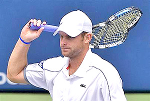

Unrealistic Perfectionism¶
By Allen Fox, Ph.D.¶

Highly motivated players can be too hard on themselves.
Unrealistic perfectionism is stressful. It is, unfortunately, quite common amongst the driven super-achiever types that populate the high-performance tennis academies where high goals can leave them anxious and stressed.
These players are perfectionists and never satisfied for long even with their tournament wins or strong performances. They look at players ranked above them as proof that they are not doing as well as they should.
They will tell me, \"I should have beaten so and so.\" or \"I am playing so much better in practice than in tournaments. I should be doing better and ranked higher.\" No matter what their ranking is, they are dissatisfied, thinking they are somehow remiss and ought to be higher.

**A key is to learn to really enjoy your successes.**
With these highly motivated individuals their strong points are also their weak points. Having high goals and being powerfully motivated drives them to work extraordinarily hard, so they get better than most people at everything they do. Very admirable!
But the downside is that they can be unreasonably hard on themselves. They are marvelous people, but they don't realize how marvelous they are. Dissatisfaction with their accomplishments keeps complacency at bay and stimulates unending efforts to fix their weaknesses and improve their strengths.
But some overdo it. With these individuals, their successes never seem quite good enough, and they get down on themselves for their perceived failures. The result can be disappointment, excessive stress, and unhappiness - all for no good reason.
It is important, then, for these people to develop better perspective so that they can appreciate their successes, recover quickly from their failures, and enjoy the process of working hard to improve their games.

**Perfectionism and stress can actually lead to clinical mental disorders.**
The fact is that prolonged stress has harmful physical effects. Our bodies and nervous systems were not designed to handle constant stress over long periods of time, even if the stress appears to be rather low-level and innocuous.
In extreme cases the admirable personal characteristics of high motivation, strong work ethic, and ambition for excellence can cause so much stress that they not only lead to burnout, but actually cause rather severe mental and physical disorders - such as panic attacks and depression.
In such cases the bad aspects of a player's extraordinary achievement drive have far outweighed the good. Although these radically negative outcomes are unlikely, I have encountered them too often and with too many good people to ignore them.
Excessive stress is potentially dangerous and should be kept in check by remembering that tennis is just a game and it (like most of our other sources of stress) is not terribly important in the greater scheme of our lives. The most substantial problem most of us really have is the stress itself.

**What does it mean when a 3.9 grade point average not good enough?**
As an example, I was working with a junior, call him Sam, who was ranked about #25 in Southern California. Sam was dissatisfied with his achievements. He came from a very successful family (his father was a highly-educated professional man); he attended an elite tennis academy; and he was desperately unhappy because he wasn't ranked as high as he felt he should be.
His high-achieving father was a powerful influence and pushed him for better results on the tennis court as well as in the classroom. He did it with the best of intentions and was in no way abusive, but the message was clear, \"You can do better!\" (Sam carried a grade-point average of 3.9 on a 4.0 scale.)
When I first met Sam, the depressed, negative look on his face was obvious, as was the sad, self-deprecating tone in his voice. He told me that his biggest problem on court was lapsing into either overwhelming anger or incapacitating discouragement when he made mistakes, fell behind, and felt the match slipping away. The problems were even working their way into his practices, where he was finding it more and more difficult to put in a productive day's effort.

**Blowing a fuse often stems from the overwhelming urge to escape stress.**
Particularly unhelpful were his father's well-intentioned suggestions and exhortations. As a non-player himself he simply couldn't understand how Sam could practice for hours every day at an expensive tennis academy and then tank in matches. Of course, from the sidelines this does strike the uninitiated as bewildering, but the perspective from the tennis court, as all of us who have seriously competed know well, is quite different.
The root problem was stress. Sam's instinctive urge was to escape it by tanking or blowing a fuse. Forever driven to win more matches and do better in school, he was under constant pressure. Much of it was self-induced, but it was augmented by the many successes and high aspirations of his father.
Sam had won a number of tournaments, but these were minimized in his mind compared to what he thought he should have done. He could to have been very reasonably proud of his accomplishments but wasn't.
This type of prolonged stress causes damage. Sam's stress was constant and growing, and he was having more and more difficulty withstanding it. He was starting to break down under the pressure and suffer panic attacks as well as occasional bouts of clinical depression. It was all brought on, in my opinion, by setting his expectations too high and abasing himself for not achieving them. He was unaware of the damage he was doing to himself, but his body and mind were simply rebelling.

**Tennis is a game you are playing for fun. Everything else is gravy.**
Although most of the admirable, super-motivated achiever types are able to handle the pressures of their extraordinarily high goals, a few are not. As happened with Sam, some of the others I've worked had their debilitating symptoms surface in their late teens, and, like Sam, they tended to be the non-rebellious, people-pleasing kinds of kids, often described by others as \"the nicest kid in the world.\"
Advising Sam
His was an extreme case, but my advice to Sam, fitting for most people, was this. First and foremost, tennis is just a game that you are playing for fun. It is not your life, nor is it ever likely to be anything more than just a game. If you happen to get more out of it (like trophies, scholarships, notoriety, pro contracts, etc.), it will simply be gravy.
Your tennis game is merely a project that you work on diligently, like any other project, to see how good you can get. It is like building a model airplane. Your objective is to build as good a plane (or game) as you can, but it is nothing more.
Naturally you would like play well and beat everybody all the time, and you can keep working toward this end, but the process itself should ultimately be satisfying. If you don't enjoy it, quit. You can get in shape by running on a treadmill. The stress comes from making tennis more important than it really is.

Fact: at any level, there will always be players better than you.
There will always be players better than you. As for the thought that you should be better and beat this person or that person - there is no end to it. Regardless of how good you get, there will always be players who can beat you.
All you have to do is keep working to get better than you are. And if playing tournaments and other matches that \"count\" stress you, don't play them. They are meaningless anyway. But if you do decide to play, recognize that you never have anything to lose. Tournaments are all upside because you might win them. Losing is no different from not playing - in either case, your only loss is that you didn't win.
And if losing in tournaments is too painful you can solve that problem easily by entering only tournaments where the players are no good. If you start winning too easily, you can make it tougher on yourself by moving up to higher level events and pitting yourself against better players, of which there is an endless supply. You can see there is no end to the process, so take pride in and enjoy your actual accomplishments at whatever level they may be.

**Improving is enjoyable and the ultimate objective is satisfaction.**
Make improving your tennis a long-term project. It is a mistake to measure your results from day to day, match to match or tournament to tournament, as there are sure to be many ups and downs. Enjoy your successes and quickly get over your defeats by maintaining the long-term view.
Remember, the ultimate object of the process is self-satisfaction. Getting good is enjoyable. If your progress seems to have stalled, recall your start as a player -- when you would have been happy to just hit the ball in the court twice in a row, and recognize how far you have come - and take pride in your progress.
**This doesn't mean you stop striving to improve, but rather that you realistically appreciate what you have done. Sam was, after all, ranked
25 in Southern California and needed to realize that about 100,000¶
other tennis players of his age would have been happy to trade games with him.**
This article is excerpted from Allen's new book, Tennis: Winning the Mental Match, which will be available at the end of 2010 on Amazon and on Allen's new website, www.allenfoxtennis.net.
Read More From Allen!
Visit him at www.allenfoxtennis.net
|  | Tennis is mentally the most difficult sport due to it's personal nature which makes winning and losing feel more |
| important than they are. In this new book, Allen offers his proven solutions to problems such as choking, reducing | |
| stress, finishing matches, and developing confidence. Based on a life time of high level play and coaching success, | |
| it's a must for all competitive players. | |
| [ to | |
| Order](http://www.amazon.com/Tennis-Winning-Mental-Allen-Fox/dp/0615407765/ref=sr_1_1?ie=UTF8&qid=1336083459&sr=8-1). |
|  | eminently preferable to losing. In his new book, The |
| Winner's Mind, Allen lays out an original step-by-step | |
| plan for succeeding at any of life's endeavors, based on | |
| his first hand and very personal observations of the | |
| careers of both world-class tennis players and successful | |
| businessman. The bottom line is that even if you are not a | |
| born champion--and only a tiny percentage of us are--you | |
| can still use the success strategies of champions to tilt | |
| the odds in your favor. Writing with brutal honesty and dry | |
| humor, Fox lays out the common mental characteristics of | |
| winners in sports and in life. He explains the critical | |
| role of intellect over emotion. He analyzes the struggle | |
| between ambition and fear and the insidious and pervasive | |
| fear of failure that undermines so many of us. He then | |
| outline how to confront and overcome these fears in your | |
| life and career, even when they are initially subconscious. | |
| Must reading from one of the great thinkers in tennis, and | |
| a Renaissance Man in life. [ to | |
| Order](http://www.tennis-warehouse.com/descpage-MIND.html). | |
| To purchase this book you can also send a check for \$17.95 | |
| to Allen Fox, 1120 Inverness Place, San Luis Obispo, CA. | |
| 93401. The price includes shipping. |
|  | insightful analysts in modern tennis. A top 10 |
| American player from the glory days before Open | |
| tennis, Fox played many of the legendary greats, among | |
| them Roy Emerson, Rod Laver, Stan Smith, and Arthur | |
| Ashe. At Pepperdine he developed the men's tennis | |
| program into an elite contender for national titles, | |
| and gave Brad Gilbert the insights that became the | |
| foundation for \"Winning Ugly\". His book Think to Win | |
| is a modern classic. He has also starred in a series | |
| of acclaimed videos, including Pro Secrets of Match | |
| Play and Allen Fox's Ultimate Tennis Lesson. | |